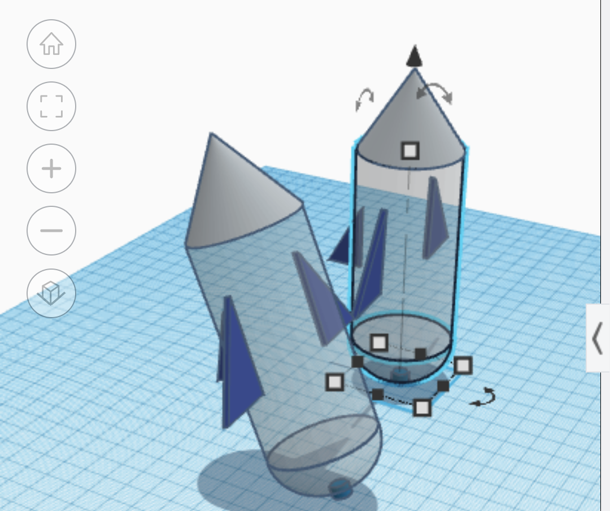
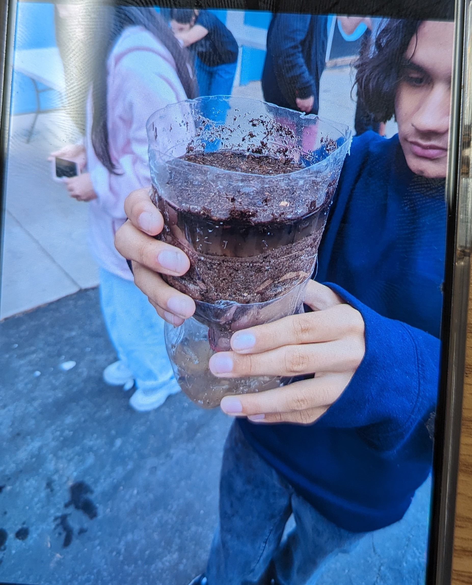
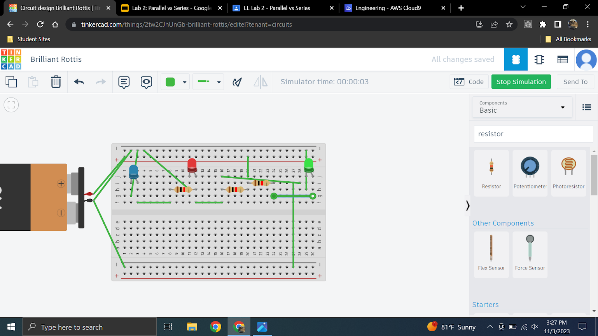

Dj's Website

8/20/23 - This is my first journal entry!
My Favorite Website
9/1/23 - One engineering dicipline I learned this week is to always wear protective gear to prevent anyone from getting hurt. One challenge we did is the marble game. One thing I started designing this week is my group's project to pop a ballon. The challenge was very fun even though my team never finished, but it was fun watching the other group get the marble inside.

9/22/23 - The challenges went alright, our E flotation device did not work, it stood floating for a meer, 3 seconds my guess. I learned from these challenges that it is very important to make prototypes because, majority of the time your first render of a project almost always fails in some way. I learned that computer engineering had computer science in it, and it does intrest me very much so, being someone whos built, worked with, and fixed numerous computers for the past 3 years.
9/28/23 - This week we learned about the profession of computer engineering. The part of computer engineering that mosts intrest me is the hardware, hands on part. This week we tore down and built back up a desktop pc, computer, and learned about computer engineering. I learned that computers have transistors. This weekend I am going to do my usual activities of music, videogames, skating, and homework.
10-6-23 - I learned that in bioengineering humans biomimic a lot of things in the enviorment. Our hand design never ended up working, because we never attached a thumb to the hand in order to get a better grip on the waterbottle. Our hand should've had a thumb and thought it true more beforehand. My weekend will be good, and no to homecoming.
This is a picture of my hand
10-13-23 - This week we learned about Aerospace Engineering. The four forces of a flying object are weight, lift, thrust, and drag. I liked when we use our projects in class. Go to website
10-20-23 - This week in engineering we learned about Aerospace engineering, and how it applies to how the entire world works with commercial airplanes and private aircrafts and how aircrafts function as a whole. Our rocket was designed with 4 wings, it flew decently compared to the other rockets, only for a few seconds. It did and didn't perform as expected because I had no clue what to expect going into the flying portion of our project.
10-26-23 - This week in engineering we learned about Enviourmental Engineering, and how it plays a big role in bettering and preserving our planet. Our engineering dicipline this week was Environmental Engineering. Our water filter worked by straining black water through dirt to catch as many dirt particles in our water to make it as clean as possible. Im excited that in this 3 day weekend, im going to see the FNAF movie har har har har.
11-3-23 - We learned about Electrical Engineering and how it works certain electronics we use everyday work. 3 fun facts about practical engineering we leared was that some countrys have different electrical regulations, we also learned that the difference about Direct Current and Alternating Current, as well as how Volts work.
11-9-23 Over the past two weeks I have learned about electrical Engineerings, how it works. For example we learned that alternating current is a current that changes up and down in value, and direct current never changes its value. One thing that was intresting is how a breadboard works, because it still makes absolutely no sense to me.
.jpg)
.jpg)